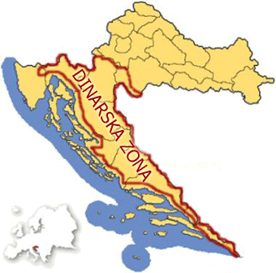

Before we get into the more intresting parts of this website I feel like its important
to give a little intorduction about myself and to explain why I wanted to do this.
My name is Matija Bebek and currently I am fourth year student at Loyola University studying computer
science. Outside of my studies I also can say that I have another passion and that is learning
the history of my people and learning Croatian Foklore Dances. You can actually a picture with my Croatian
Folklore attire as well as my Croatian intstrument I play called a bisernica
Why
One of the main reasons I wanted to do this was because as I started to see my intrest in both
thing regarding tech as well as seeking intrest regarding something from my past I wanted to see if there
was a way where I can bring the two things I love togethor. So I decided to make and information website about
the four regions of Croatian Foklore. One of the other reasons I also wanted to do this is I saw that there werent
really many websites that explained these four regions certianly not in English but as well as not in Croatian as well
so I thought that if I could make something that it would be easy accesible but also when I am still retaining knowladge of both tech
and folkore I can still add more in the future.
Od Mene
Prije sto me pocemo pricati od hrvatski foklorene zone ja mislim da je jako bitno
da prvo pricam malo od sebe i samo da moli objasnim jasto sam ja odlucio da ja radim ovaj
proekat. Moj ime je Matija Bebek ja sam sad cetverti srjedne falcultelta u Loyola ko studira
informatiku. Van moje skole ja radim ja mogu rec da ja imam druge stvari koji volim da radim
and to je ucenje hrvatski foklore plesovi i tambura. Mores i isto viditi sliku sa mojom
hrvatskim nosnja i sa mojom tamburom.
Zasto
Jedong od glavini razloga od zasto sam jad tjeo ovo uraditi je kad sam ja poceo vidjeti
moji intrese od informatiku i foklore ja sam tjei vidjeti ako sam mogao nesto napraviti
da donese te stvari skupa. Jos jendo stvar sto sam vidio je svtarno nema puno svtari na
iternet od hrvatski foklore naravno nista na engleski ali isto nije bilo puno stvari za
hrvatski i tu sam dobio ideju da napravim nesto sta je lako nac i da mogu nesto napraviti
od sve cetri hrvatske podurcije.
Panonska
Dances
Looking at this region we can really see the wonders that this area of foklore provides. Throught history
it has been known as one of the most energetic regions when we look at the other three there are so many dances from different areas of Croatia
that are from this zone. We have dances from Moslavina, Posavina, as well as Turopolje. We also see other area that are from
Novogradiskog kraja and pozeske kotlin, and we even learn of dances from Croatians that lived in Hungary that sort used inspiration from hungarian culture
dances to there own.
Tambura
Its not just the dances that are known to be vibrant but we also have seen the intrument side as well with all the songs being full
of energy as well having so many different intruments togethor being able to bring so many sounds togehtor to make it into one song that our ancestors used
are just incredible. There are also the many names of the songs associtated with this region we have song like Turopoljski drmes, Lipo ti je, repa, and staro sito.
Just becuase we have song associated with dances that dosn't mean that there are orkestra pieces associated with this zone and one of the songs we saw
was called Lipo ti je which really brings out the energy of this specific zone.
Posavina
Lipo ti je
Dinarska

Dances
With Dinarska Zona there is such a different style regarding these types of foklore dances in this specific area of Croatia,
and I think this shows why Croatain Foklore in my eyes is so exotic. Even though this is all in one country and only a few hours away
we really now see the difference in dances regarding the zone they are in. When you see the video regarding the dances in this region of Croatia,
you will see that there is no music and really none of these dances in this region have music or in a few dances there is only one instrument that plays for them
and when looking at the steps in this region we start to notice that with the other zone explained above where the steps are livly and people are light on there feet
the steps in this region you start to see that they are heavy and tough and that in this region they really use the full force of there foot which is really different
then the other Zones.
Tambura
When we look at the tambura side there really isn't that much corrolation with the dances and really even orchestra pieces that fit this style
in the this specfic zone. Back then their really weren't many people that played istruments and most of the dances as I explained were mostly
emphesized on the steps that they did but there is still one orhcestra piece that is one of the most populer in Croatia which is show the really
the idea of what this zone is supposed to be and sound and that piece is called Hercegovacki Ples